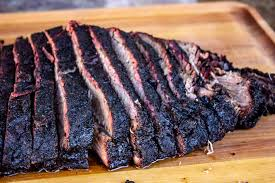

Texas Style Smoked Brisket

Description
This will help you produce a perfectly smoked and seasoned brisket. It will come out of your smoker looking like a meteorite and be tender as can be. Be sure to use the highest grade brisket you can find.
Ingredients
- 12 pound beef brisket
- 12 ounces of beef broth (optional)
- 6 teaspoons of coarse kosher salt
- 3 tablespoons of coarsely ground black pepper
- 1 tablespoon of granulated white sugar
- 1 tablespoon of onion powder
- 2 teaspoons of mustard powder
- 2 teaspoons of garlic powder
- 2 teaspoons of American chili or ancho chili powder
- 1 teaspoon of chipotle or cayenne powder
Instruction
- Trim the fat off the brisket, be sure to leave 1/4 inch layer of fat.
- (Optonal) Inject the beef broth into the brisket. Inject in several location about 1" apart. Inject 1 ounce of broth per pound of brisket.
- Rub the corse kosher salt all over the brisket.
- Mix the seasonsing together in a small bowl.
- Rub the seasoning mix all over the brisket.
- Regrigate brisket for 12-24 hours, 4 hours at a minimum.
- Fire up your smoker and get it to 275 degrees Fehrenheit.
- (Optional) When the brisket reaches 170 degrees Fehrenheit internally, wrap it in foil or butcher paper.
- Remove the brisket from the smoker when the internal temp hits 203 degrees Fehrenheit.
- Allow the brisket to rest until it hits 150 degrees Fehrenheit.
- Slice and serve.